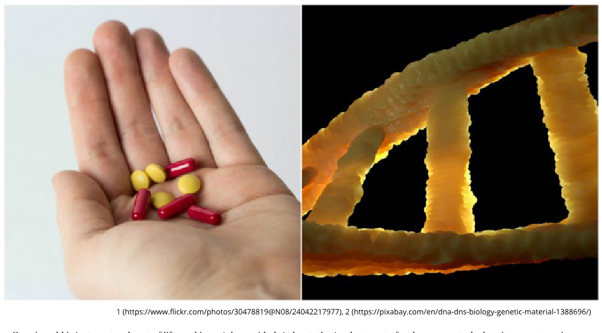
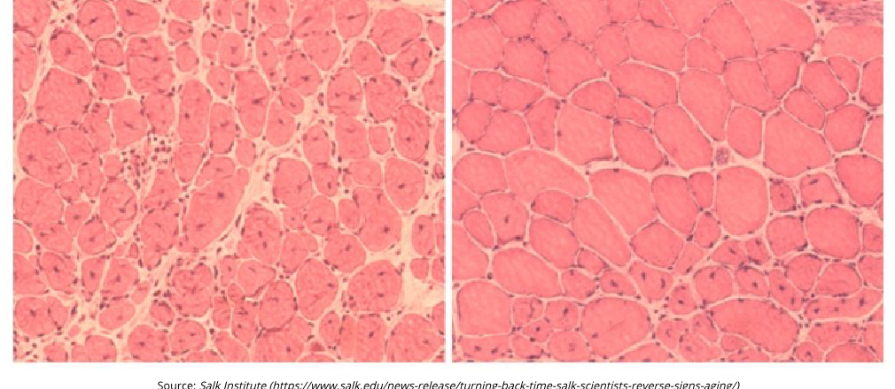
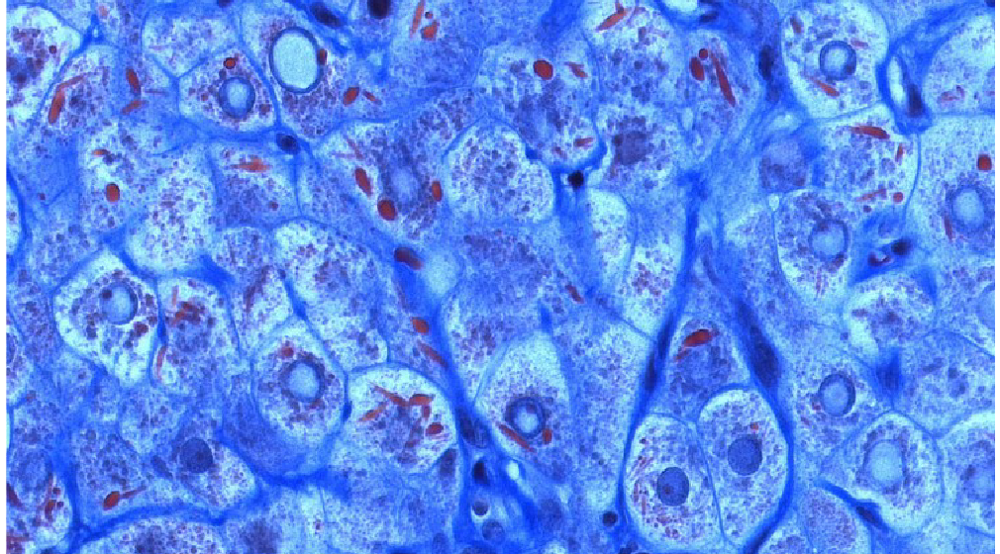
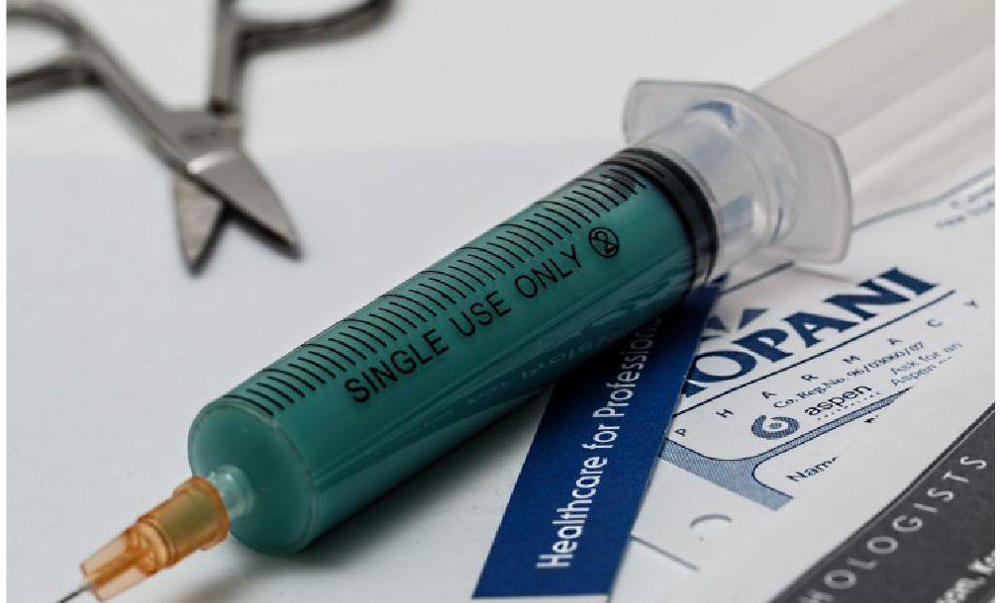
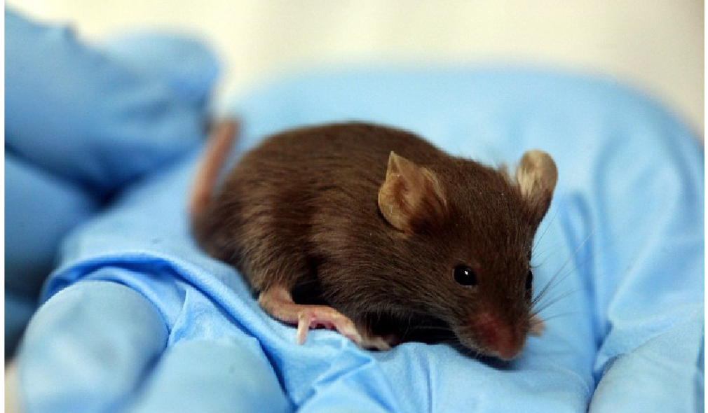
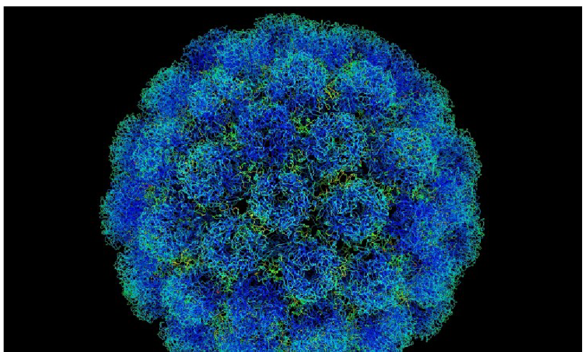
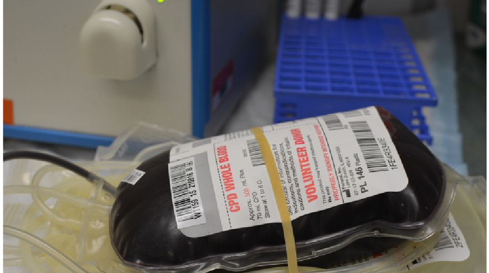
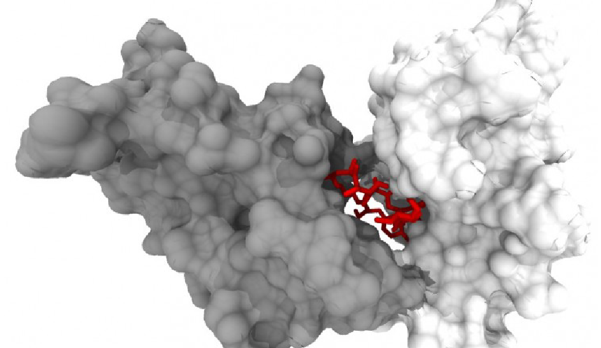

역노화를 현실로 만들 수 있는 12가지 혁신
사오르세 커리건
2018년 7월 16일
과학이 정말로 노화의 시계를 되돌릴 수 있을까? 우리는 당신이 생각하는 것보다 역노화에 더 가까이 와 있을지도 모른다.
나이가 드는 것은 삶의 자연스러운 일부이며 피할 수 없는 일이다. 적어도 노화에 대해서는 우리 대부분이 그렇게 받아들이고 있다. 하지만 수십 년 동안 과학자들은 우리를 젊고 건강하게 유지하는 열쇠를 풀어내기 위해 연구해 왔다. 다소 터무니없이 들릴 수도 있지만, 항노화 기술 분야에서는 놀라운 돌파구가 몇 가지 나왔다. 인간의 몸과 그 작동 방식에 대해 더 많이 알게 될수록, 우리는 노년을 과거의 일로 만들 가능성에 조금씩 더 가까워지고 있다. 다음은 역노화를 현실로 만들 수도 있는 몇 가지 놀라운 혁신이다.

1. 줄기세포 기술: 노화한 세포를 다시 프로그래밍하기
2016년, 캘리포니아의 솔크 생물학 연구소 연구진은 유도만능줄기세포(induced pluripotent stem cells)를 이용해 늙은 쥐의 세포를 다시 프로그래밍하는 데 성공했다. 이 줄기세포는 성체 세포에서 만들어지며, 과학자들은 이를 통해 피부세포를 배아 상태로 되돌릴 수 있었다. 연구에서 다시 프로그래밍된 세포를 가진 쥐는 그렇지 않은 대조군보다 30% 더 오래 살았다. 물론 유도만능줄기세포를 사용하는 데에는 위험이 따르고, 인간 대상 임상시험까지는 아직 한참 멀었지만, 이 연구는 지금까지 항노화 노력에서 줄기세포를 활용한 가장 흥미로운 자료 가운데 하나를 제시했다.

2. 돌연변이 mtDNA 표적화: 노화한 세포 복구하기
2016년 11월, 칼텍과 UCLA 연구진은 세포의 미토콘드리아를 조작해 DNA를 효과적으로 복구하는 방법을 발견했다. 세포의 미토콘드리아에는 일반적으로 두 종류의 DNA가 있는데, 정상 mtDNA와 돌연변이 mtDNA가 그것이다. 연구는 시간이 지나며 돌연변이 mtDNA가 축적되면 세포가 늙고 결국 죽게 된다고 설명했다. 이 연구가 주목한 것은 자가포식(autophagy), 즉 세포가 스스로를 먹어 치우는 과정이 돌연변이 mtDNA를 표적화해 노화 과정을 막는 데 쓰일 수 있는지 여부였다. 연구진은 초파리의 근육세포에서 미토파지(mitophagy) 활동을 증가시키는 데 성공했고, 그 결과 돌연변이 mtDNA가 뚜렷하게 줄어드는 것을 확인했다. 비슷한 기술이 인간에게서도 노화를 줄이거나 늙은 세포를 복구하는 데 쓰일 수 있을지는 앞으로 더 지켜봐야 한다.

3. 스플라이싱 인자 활성화: 세포 분열을 유도하는 리버설로그 만들기
2017년 말, BMC Cell Biology는 영국의 엑서터대학교와 브라이턴대학교 연구진이 수행한 역노화 기술 관련 연구를 실었다. 이 연구는 세포 속 스플라이싱 인자가 나이가 들면서 비활성화된다는 기존 엑서터대의 발견을 바탕으로 진행됐다. 연구진은 적포도주에 들어 있는 레스베라트롤과 비슷한 화학물질인 reversalogues를 투입하면, 늙은 세포의 스플라이싱 인자를 다시 활성화할 수 있다는 사실을 발견했다. 그렇게 되면 세포는 젊은 세포처럼 계속 분열할 수 있고, 세포를 다시 젊게 만들며 세포의 노화와 죽음을 막을 수 있다. 이 연구가 실제로 적용된다면 더 긴 수명, 노화 징후 감소, 그리고 노년기 더 나은 건강으로 이어질 수 있다.
4. 리주버네이트 바이오: 개의 노화 과정을 되돌리기
언제까지나 귀엽고 어린 강아지를 원하지 않을 사람이 있을까? 하버드 내부의 비밀스러운 스타트업인 Rejuvenate Bio는 개의 노화 과정을 되돌리는 기술을 연구하고 있다. 이 회사의 연구 방법은 거의 알려져 있지 않지만, 심장질환이나 신장질환 같은 위험을 표적으로 삼아 제거하기 위해 특정 유전자를 조절하고 있다는 이야기가 나온다. 현재 회사는 유전적 이유로 수명이 짧은 코커스패니얼과 도베르만 핀셔에 주로 집중하고 있다. Rejuvenate Bio는 개 대상 역노화 서비스가 충분히 시장성이 있다고 보고 있으며, 이것이 FDA 승인 속도를 높이고 결국 인간 대상 임상시험으로 가는 길을 열어 줄 것이라고 기대한다.
5. 세놀리틱 약물: 기존 약물을 조합해 역노화 이루기
바로 이번 달 Nature Medicine은 미국 국립노화연구소 연구를 소개했는데, 기존에 존재하던 약물을 조합해 주사하면 수명을 늘리고 연령 관련 건강 문제를 늦출 수 있다는 내용이었다. 이 연구는 쥐를 대상으로 진행됐고, 쥐에게는 다사티닙(dasatinib)과 케르세틴(quercetin)이 투여됐다. 다사티닙은 보통 백혈병 치료에 쓰이는 약이고, 케르세틴은 과일과 채소에 들어 있는 성분이다. 연구진은 이 약물들을 투여했을 때 노쇠세포(senescent cells)가 선택적으로 제거됐고, 쥐의 속도와 이동성 저하도 눈에 띄게 줄었다고 보고했다. 실제로 이 연구에서 약물을 투여받은 자연노화 쥐는 대조군보다 36% 더 오래 살았다. 이런 결과가 인간에게서도 재현된다면, 우리는 이미 노화를 되돌리고 수명을 늘릴 수 있는 약을 손에 쥐고 있는 셈이 된다.

6. 합성 펩타이드: 노화 과정에 개입하기
지난달에는 마셜대학교 조안 C. 에드워즈 의과대학에서 새로운 연구가 나왔는데, 이 연구는 Na/K-ATPase 산화 증폭 고리(NAKL)가 항노화 개입의 표적이 될 수 있다고 제안했다. 연구진은 pNaKtide라는 합성 펩타이드를 시험하는 데에도 성공했는데, 이 물질은 질병 위험과 노화 효과를 더 줄일 수 있을 것으로 보였다. 연구진은 먼저 서구식 식이를 먹여 NAKL이 활성화된 쥐를 대상으로 가설을 검증했고, 그 과정에서 노화의 증거가 나타난 뒤 pNaKtide로 이를 처리했다. 치료 결과 NAKL이 촉발한 노화 과정은 느려졌다. 이어서 연구진은 인간의 진피 섬유아세포(human dermal fibroblasts)에도 같은 치료를 적용했고, 비슷한 결과를 기록했다. 이는 NAKL을 효과적으로 표적화하고 pNaKtide 같은 치료를 개입시킬 수 있다면, 노화 과정을 상당히 늦출 수도 있음을 시사한다.

7. 세포를 매끈하게 만들기: 바이러스로 세포의 주름 펴기
나이가 들면서 주름지는 것은 피부만이 아니다. 알고 보니 세포도 주름진다. 올해 5월 버지니아대학교 의과대학 연구진은 지방간 같은 여러 노화 효과가 세포핵의 주름 때문일 수 있다고 밝혔다. 핵이 주름지면 DNA가 정상적으로 기능하지 못한다. 그렇다면 주름진 핵을 어떻게 해야 할까? 이들의 연구에 따르면, 우리는 바이러스를 이용해 핵막을 매끈하게 만들 수 있을지도 모른다. 연구진은 바이러스를 변형해 lamin이라는 단백질을 운반하고 전달하도록 만들 수 있다고 본다. 그렇게 하면 세포는 다시 젊은 세포처럼 기능할 수 있고, 노화 효과를 되돌리며 다양한 건강 위험으로부터 세포를 보호할 수 있다는 것이다.

8. 젊은 피: 혈관 속에 젊음을 다시 주입하기
마치 흡혈귀 이야기처럼 들릴 수도 있지만, 젊은 피야말로 노화 과정을 되돌리는 열쇠일지도 모른다. 올해 2월 Cell Reports는 젊은 사람의 혈액이 노화에 맞서는 데 중요한 역할을 할 수 있다는 연구를 실었다. 이 연구에서 연구진은 어린 쥐의 혈액을 늙은 쥐의 혈액에 주입했을 때, 늙은 쥐의 뇌에서 뉴런과 줄기세포 생성이 촉진된다는 점을 확인했다. 그 결과 늙은 쥐의 뇌는 더 젊은 쥐의 뇌처럼 기능하게 되었고, 인지에서 나타나는 노화 효과도 되돌아간 것으로 보였다. 현재는 16세에서 24세 사이 젊은 사람의 혈장을 노인에게 주입하는 임상시험도 진행 중이다. 지금까지의 결과는 유망하지만, 모두가 젊음을 유지하려고 젊은 피를 찾게 되기까지는 아직 시간이 더 필요하다.

9. 항노화 알약: 약으로 나이를 다루기
하버드 의과대학 폴 F. 글렌 노화생물학센터 연구진은 항노화 알약을 만들 수 있을 것이라고 본다. 이런 기대는 2017년 3월 발표된 연구에서 비롯됐는데, 이 연구는 과학자들이 니코틴아마이드 아데닌 다이뉴클레오타이드(NAD+)를 사용해 쥐의 노화 징후를 되돌렸다고 보고했다. NAD+는 세포 안에 존재하는 분자로, 건강한 세포 기능을 유지하고 세포 노화를 조절하는 데 핵심적이다. 실험에서 과학자들은 쥐의 물에 NAD+ 몇 방울을 떨어뜨렸다. 몇 시간 만에 쥐 세포 속 NAD+ 수치는 크게 증가했고, 일주일 안에 NAD+를 먹은 쥐의 조직은 젊은 수준으로 되돌아갔다. 2017년 11월에는 인간 대상 시험도 진행됐고, 이 역시 비슷하게 유망한 결과를 보였다. 만약 NAD+ 보충제가 FDA 승인을 받는다면, 머지않아 우리 선반 위에는 역노화 알약이 올라와 있을지도 모른다.
10. 대마로 역노화하기: THC로 뇌 기능 개선하기
다소 이상하게 들릴 수 있지만, 대마(cannabis)가 노화 징후를 되돌리고 인지 능력을 향상시키는 열쇠가 될 수도 있다. 이것은 지난해 5월 발표된 본대학교와 히브리대학교 연구에서 제시된 주장이다. 이 연구에서 연구진은 생후 12개월과 18개월 된 쥐의 뇌 생물학적 상태를 성공적으로 더 젊은 상태로 되돌렸다. 실험 쥐는 4주 동안 취하게 하지 않는 낮은 용량의 THC를 투여받았다. 그 결과 위약을 받은 대조군보다 더 좋은 수행을 보였고, 인지 수행 수준도 더 어린 쥐와 비슷한 수준으로 나타났다. 이는 낮은 용량의 THC 치료가 노인에게도 젊은 수준의 인지 기능을 되찾게 할 수 있음을 시사한다.
11. 항노화 박테리아: 박테리아를 이용해 항노화 알약 만들기
일부 연구자들은 노화 과정을 되돌리는 열쇠가 이스터섬에서 발견된 한 박테리아에 있다고 본다. 라파마이신(rapamycin)은 이미 이식 의학과 면역억제제로 사용되고 있지만, 과학자들은 이제 그것이 노화 효과를 되돌리는 데에도 활용될 수 있다고 생각한다. 일련의 실험에서 라파마이신은 벌레, 파리, 쥐의 죽음을 늦추는 것으로 입증됐다. 더 최근의 연구들은 개를 시험 대상으로 삼고 있으며, 궁극적으로는 인간용 항노화 알약에 라파마이신을 사용하는 것을 목표로 하고 있다. 많은 회사가 라파마이신 알약을 가장 먼저 승인받아 시장에 내놓기 위해 경쟁하고 있지만, 실제로 인간이 복용할 수 있게 되기까지는 시간이 더 걸릴 것이다.

12. 유전자 삭제: 특정 유전자를 제거해 수명 늘리기
2015년, 벅 노화연구소와 워싱턴대학교 연구진은 10년에 걸친 연구 끝에 수명을 늘릴 수 있는 유전자를 찾아 제거하는 데 성공했다고 밝혔다. 연구진은 제거했을 때 수명이 60% 증가하는 238개의 유전자를 확인했다. 이 유전자들 가운데 많은 수가 포유류에도 존재하기 때문에, 이론적으로는 같은 과정이 인간에게도 적용될 수 있다. 다만 효모에서 노화를 일으키는 유전자를 시행착오 끝에 찾아내고 제거하는 데만도 10년이 걸렸다. 이 결과를 인간에게 그대로 재현하는 데에는 매우 오랜 시간이 걸릴 수 있지만, 그럼에도 결과 자체는 고무적이다.